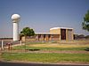

weather-station

Definition: A weather station is a facility, either on land or sea, with instruments and equipment for measuring atmospheric conditions to provide information for weather forecasts and to study the weather and climate. The measurements taken include temperature, atmospheric pressure, humidity, wind speed, wind direction, and precipitation amounts. Wind measurements are taken with as few other obstructions as possible, while temperature and humidity measurements are kept free from direct solar radiation, or insolation. Manual observations are taken at least once daily, while automated measurements are taken at least once an hour. Weather conditions out at sea are taken by ships and buoys, which measure slightly different meteorological quantities such as sea surface temperature (SST), wave height, and wave period. Drifting weather buoys outnumber their moored versions by a significant amount.
Source: Wikipedia
Wikipedia Page (Something wrong with this association? Let us know.)
Wikidata Page (Something wrong with this association? Let us know.)
Occurs in: